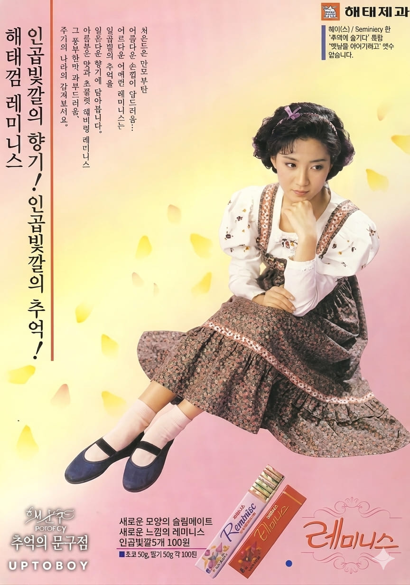

신혜수
입곱빛깔의 향기!
입곱빛깔의 추억!

입곱빛깔의 향기!
입곱빛깔의 추억!

신혜수는 1980년대 후반부터 활동한 배우로, 세련되고 도시적인 이미지를 바탕으로 영화와 광고에서 많은 사랑을 받았다. 임권택 감독의 영화 「아다다」를 통해 국제 영화제에서 주목받았으며, 당대의 신여성 이미지를 대표하는 배우 중 한 명으로 평가받는다.
해태제과의 레미니스는 다양한 향과 색상을 강조한 과일향 껌 제품으로, 1980년대 후반 청소년과 젊은 층을 중심으로 인기를 얻었다. 제품명인 '레미니스(Reminis)' 는 추억을 떠올리게 하는 감성을 담고 있으며, 다채로운 향과 디자인이 특징이었다.
광고는 "일곱빛깔의 향기, 일곱빛깔의 추억"이라는 문구를 통해 제품의 다양한 향과 감성적인 이미지를 강조했다. 신혜수의 세련된 분위기와 밝은 이미지는 제품 콘셉트와 잘 어울렸으며, 젊은 소비자들에게 트렌디한 껌 브랜드로 인식되는 데 기여했다.
1980년대 후반은 껌 시장 경쟁이 매우 치열했던 시기로, 해태와 롯데 등 제과업체들은 다양한 향과 디자인을 앞세운 제품을 출시했다. 당시 껌은 단순한 간식이 아니라 패션과 개성을 표현하는 아이템으로 여겨졌으며, 껌 종이 디자인을 수집하거나 꾸미는 문화도 유행했다. 레미니스 역시 이러한 감성 마케팅을 적극 활용한 대표적인 제품이었다.